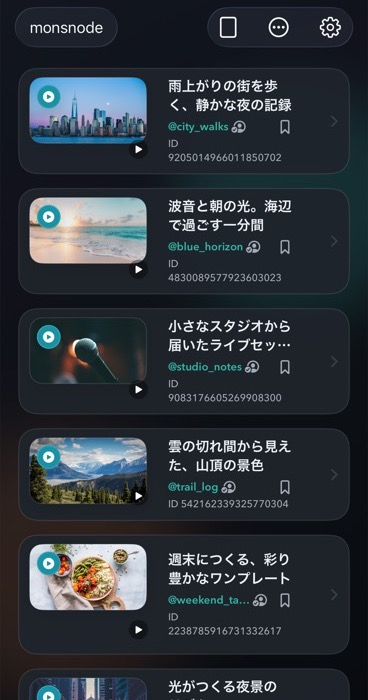
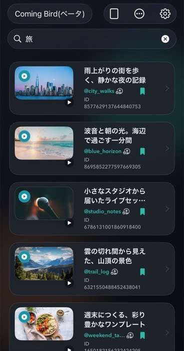
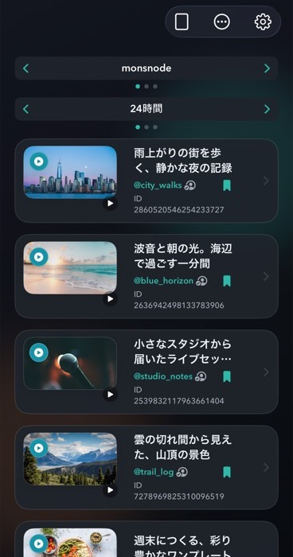
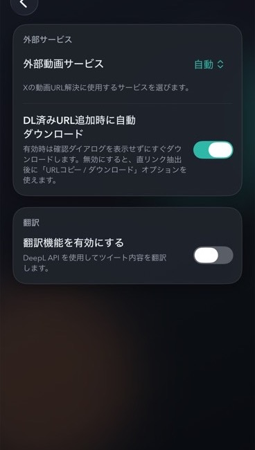
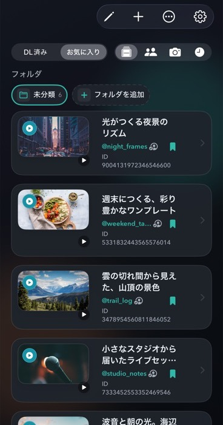
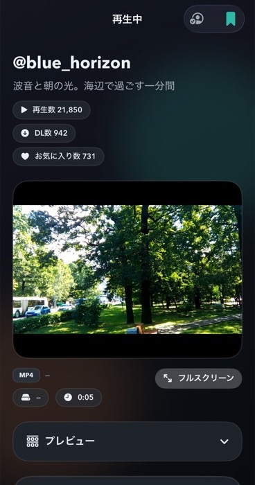
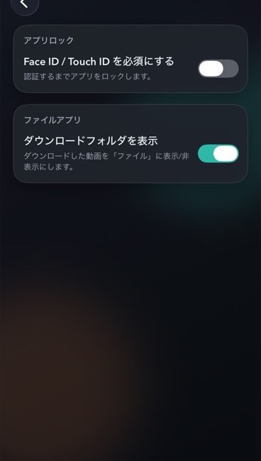

Home
複数ソースのフィードを切り替え、リストまたは2〜8列のグリッドで閲覧。表示方法やカルーセルの位置も自分に合わせて調整できます。

Unofficial X video client for iOS
8つのX動画系コンテンツソースを横断。フィード、検索、ランキング、再生、保存まで、ひとつのアプリで完結します。
iMons
Get yourself going.
8 sources, one app
Coming Bird Beta
iMonsユーザーの再生、ダウンロード、お気に入りをもとに、新しい動画や注目されている動画を見つけられる独自のコンテンツソースです。
Coming Birdはベータ版です。外部サービスや運用状況により、一部機能を利用できない場合があります。
Features
コンテンツとの距離を縮めるための機能を、ひとつのアプリにまとめました。
複数ソースのフィードを切り替え、リストまたは2〜8列のグリッドで閲覧。表示方法やカルーセルの位置も自分に合わせて調整できます。

対応ソースのタグやユーザーを検索。人気順と新着順を切り替えて、目的の動画を発見できます。

ソースごとのランキングを確認。24時間、週間、月間などの期間を切り替えられます。

XのURLやShare Extensionから動画を追加して保存。URL解決サービスや自動ダウンロードも設定できます。

動画とユーザーをフォルダ、スナップショット、視聴履歴で整理。Google Drive同期にも対応します。

通常再生、Shorts、PiPに対応。消失した動画はWayback Machineから再生候補を探せます。

Face IDとTouch IDによるアプリロックとプライバシーオーバーレイに対応します。

Download
iOS 17.0以上に対応。まずは AltStore PAL の手順を確認してください。iOS 26.2以上では単体インストールが可能です。それ以外の環境ではIPAのサイドロードを利用できます。
SUPPORTインストールで困ったらDiscordへ